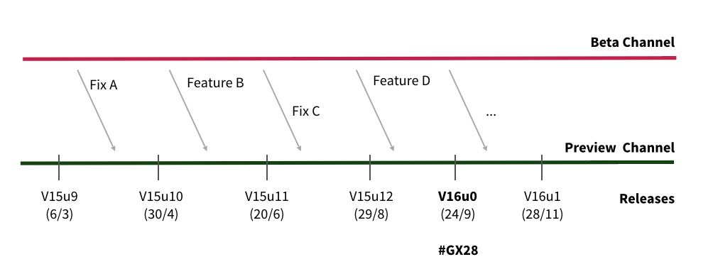

If you already have GeneXus 15, GeneXus 16 is very easy to adopt and here is why: We have at this moment 2 public release channels and we are publishing builds every night on both channels (if they met the corresponding quality standards). One of them is the GeneXus Beta Channel where beta testers are testing functionalities that we are preparing and the other is the GeneXus Preview Channel where we release versions (or their upgrades) every 2 months.  The new features are appearing in the Beta channel, and when they are ready, they are moved to the Previews channel and released in the next upgrade. The good news is that GeneXus 16, technically speaking, is just a new upgrade. The key is that for you there is not a big jump, and to go from an upgrade of GeneXus 15 to an upgrade of GeneXus 16 is like updating from one upgrade to another of GeneXus 15. More Information: GeneXus 16 Compatibility Section
|
| Backlinks | ||
| Category:Converting Knowledge Bases to GeneXus 16 | Toc:GeneXus 16 | GeneXus 16 Compatibility Section |